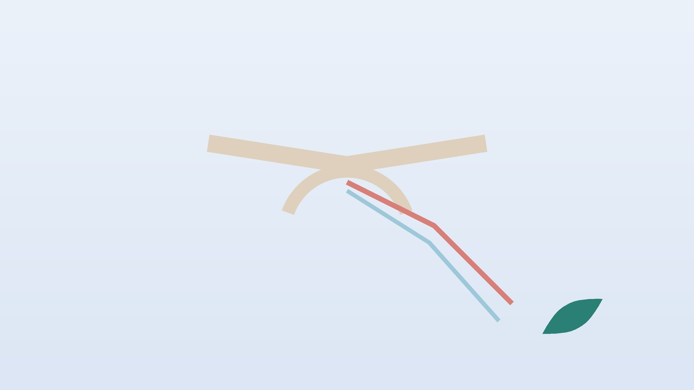

건강 칼럼 · 인천 흉곽출구증후군 한의원
팔이 저리고 무거운데 목디스크가 아니라면, 흉곽출구증후군 한방 관리

내 팔 저림, 흉곽출구 문제일까요?
- 머리를 감거나 빨래를 널 때처럼 팔을 들고 있으면 금방 저리고 힘이 빠진다
- 새끼손가락과 약지, 아래팔 안쪽이 주로 저리다
- 백팩이나 숄더백을 메면 어깨 앞쪽이 눌리며 팔이 무거워진다
- 목 옆이나 쇄골 위를 누르면 팔 쪽으로 찌릿하게 뻗친다
- 아침보다 일을 많이 한 저녁에 팔이 더 묵직하다
- 목디스크나 손목터널증후군 검사에서는 뚜렷한 이상이 없다고 들었다
이 체크리스트는 진단 도구가 아닙니다. 팔이 붓거나 색이 변하는 증상이 함께 있다면 체크 개수와 상관없이 병원 진료가 먼저입니다.
바로 병원 진료가 필요한 신호 (혈관형 의심)
- 팔이나 손이 갑자기 붓고 피부가 검푸르게 변했다 (정맥이 막힌 경우)
- 손가락이 하얗게 질리거나 차갑고, 쓰면 금방 아프며 손목 맥이 약하게 느껴진다 (동맥이 눌린 경우)
- 팔 저림과 함께 갑자기 숨이 차거나 가슴이 아프다 (즉시 119)
- 한쪽 팔다리 힘이 갑자기 빠지거나 말이 어눌해졌다 (뇌졸중 의심, 즉시 119)
혈관형은 흔하지 않지만 혈전이 생길 수 있어 혈관외과나 응급실에서 초음파·조영 검사를 먼저 받아야 합니다. 365스마일한의원은 혈관 원인이 배제된 신경형 흉곽출구증후군을 진료하며, 진료 중 위 신호가 보이면 병원을 안내합니다.
팔로 가는 길은 어디서 좁아지나요?
목에서 나온 신경 다발(상완신경총)과 쇄골 아래 동맥·정맥은 겨드랑이로 가기 전에 세 군데 좁은 문을 지납니다. 목 옆 앞·중간 사각근 사이의 틈, 쇄골과 첫째 갈비뼈 사이, 가슴 앞 소흉근 아래입니다. 미국혈관외과학회 보고 기준(2016)은 이 병을 신경형·정맥형·동맥형으로 나누며, 신경형이 대부분을 차지합니다.
- 눌리는 이유: 어깨가 앞으로 말리고 처진 자세, 사각근·소흉근이 짧아진 경우, 목 부위 교통사고, 드물게 태어날 때부터 있는 목갈비뼈가 원인이 됩니다.
- 목디스크와 다른 점: 목디스크는 고개를 젖히거나 기울일 때 한 줄기로 뻗치는 경우가 많고, 흉곽출구증후군은 팔을 드는 자세에서 팔 전체가 무겁게 저려 오는 경우가 많습니다.
- 손목터널증후군과 다른 점: 손목터널은 엄지·검지·중지 쪽이 저리고 밤에 손이 저려 깨는 일이 흔하지만, 흉곽출구는 새끼손가락 쪽과 아래팔 안쪽까지 넓게 저리는 일이 흔합니다.
한의학은 흉곽출구증후군을 어떻게 보나요?
한의학에는 같은 이름의 병은 없지만, 팔이 저리고 감각이 둔해지는 것을 비증(痺證)과 마목(麻木)으로 다뤘습니다. 『황제내경 소문』 비론편은 기혈이 잘 돌지 못하면 살갗이 둔해지고 저린다고 보았습니다. 목과 어깨가 굳어 길이 좁아지면 기혈이 팔 끝까지 닿지 못한다고 봅니다.
오래 고개를 숙이고 일하며 어깨에 힘이 들어간 분은 근육이 뭉친 쪽, 몸이 마르고 쉽게 지치는 분은 기혈이 부족해 팔을 기르지 못하는 쪽으로 나누어 봅니다.
나의 팔 저림은 어떤 유형일까?
혈관형이 배제된 뒤 함께 쓰는 한의학적 구분입니다.
1. 기체혈어(氣滯血瘀) 뭉쳐서 누르는 유형
- 이런 분에게 많아요
- 하루 종일 컴퓨터·운전을 하고 어깨가 늘 올라가 있는 분
- 나타나는 모습
- 목 옆과 어깨 앞이 단단하게 뭉치고 저림이 한 줄로 뻗친다
- 함께 오는 몸의 신호
- 두통, 날개뼈 안쪽 결림
- 진찰에서 보이는 모습
- 사각근과 소흉근에 뚜렷한 압통
- 치료 방향
- 뭉친 근육과 혈을 풀어 길을 넓히는 방향 (신통축어탕 계열)
- 오늘부터 해 볼 것
- 한 시간마다 어깨를 귀 쪽으로 올렸다가 툭 떨어뜨리기를 5번 해 보세요.
2. 풍한습(風寒濕) 시리고 저린 유형
- 이런 분에게 많아요
- 에어컨 바람을 오래 쐬거나 찬 곳에서 일하는 분
- 나타나는 모습
- 팔이 시리고 저리며 따뜻하게 하면 한결 낫다
- 함께 오는 몸의 신호
- 몸이 무겁고 흐린 날 더함
- 진찰에서 보이는 모습
- 혀가 희고 맥이 느림
- 치료 방향
- 찬 기운과 습을 걷어 팔의 순환을 돕는 방향 (견비탕·오적산 계열)
- 오늘부터 해 볼 것
- 목에 얇은 스카프를 두르고 잘 때 어깨를 덮어 주세요.
3. 기혈허(氣血虛) 힘이 달리는 유형
- 이런 분에게 많아요
- 마르고 어깨가 처진 체형, 출산 뒤나 과로가 이어진 분
- 나타나는 모습
- 저림보다 팔이 무겁고 쉽게 지치는 느낌이 크다
- 함께 오는 몸의 신호
- 어지러움, 손발이 참, 얼굴이 창백함
- 진찰에서 보이는 모습
- 맥이 가늘고 약함
- 치료 방향
- 기혈을 보해 근육과 신경을 기르는 방향 (황기계지오물탕 계열)
- 오늘부터 해 볼 것
- 가방은 가볍게, 끈은 넓은 것으로 바꿔 보세요.
한의원에서는 어떻게 진찰하나요?
- 저림 지도: 어느 손가락까지, 어떤 자세에서 저린지를 그려 보며 목디스크·손목터널과 나눕니다.
- 팔 들기 검사: 팔을 들어 손을 쥐었다 폈다 반복할 때 저림이 재현되는지, 맥과 손 색이 변하는지 봅니다.
- 자세와 근육: 어깨가 말린 정도, 사각근·소흉근의 긴장과 압통, 목 움직임을 확인합니다.
- 초음파: 목 옆 사각근 사이와 쇄골 아래를 보며 근육 두께와 신경 다발 주변을 살피고, 혈관 이상이 의심되면 병원 검사를 권합니다.
침·약침·추나·한약 치료는 어떻게 하나요?
1. 침 치료
- 풍지(風池): 뒤통수 아래, 목 뒤 두 굵은 근육 바깥쪽의 오목한 곳입니다.
- 견정(肩井): 목 뿌리와 어깨 끝을 이은 선의 한가운데입니다. 아래가 폐와 가까워 얕게 놓습니다.
- 소해(少海): 팔꿈치를 굽혔을 때 안쪽 주름 끝의 오목한 곳으로, 새끼손가락 쪽 저림에 씁니다.
- 후계(後溪): 주먹을 쥐었을 때 새끼손가락 아래 손날 쪽에 튀어나오는 주름 끝입니다.
목 옆과 가슴 앞이 차고 뻣뻣하면 온열 요법을 함께 합니다.
2. 약침·초음파 가이드 약침과 추나 요법
약침은 일반 약침과 초음파 가이드 약침을 모두 시행하며, 아픈 부위의 깊이와 주변 구조에 따라 진찰 후 골라 씁니다. 초음파 가이드 약침은 초음파 화면으로 바늘 끝을 확인하면서 놓는 방식입니다. 초음파로 사각근 사이를 지나는 신경 다발과 쇄골 아래 혈관의 위치를 확인하고, 이를 피해 짧아진 사각근과 소흉근에 약침이 닿도록 놓습니다. 등이 굽고 첫째 갈비뼈와 흉추가 굳어 통로가 좁아진 경우 진찰 후 추나 요법을 시행하며, 혈관형이 의심되면 하지 않습니다.
3. 한약
유형에 따라 뭉친 것을 풀거나 기혈을 보하는 탕약을 처방합니다. 진통제나 신경 약 등 복용 중인 약은 알려 주시면 확인해 처방합니다. 임신 중이거나 갑상선·간 질환 병력이 있다면 진료 때 꼭 알려 주세요. 확인 후 안전한 약재로 처방합니다. 한약은 원장이 원내 탕전실에서 약재 선별부터 달이는 과정까지 직접 관리하며, 10일분씩 처방해 복용 경과를 보고 약재 구성과 양을 조절합니다. 아픈 자리는 초음파 가이드 약침과 추나로 다스리고, 통증이 오래가게 만드는 몸속의 기혈 순환과 장부 기능은 체질에 맞춘 한약으로 함께 살피면 통증 완화와 재발 관리를 함께 도모할 수 있습니다.
원장님이 네이버 블로그에 진료 이야기와 건강 정보를 꾸준히 올리고 있습니다. 더 많은 이야기는 블로그에서 확인해 보세요.
블로그 보기관리는 어떤 순서로 진행되나요?
- 원인 구분 혈관형 신호와 목디스크·손목터널 가능성을 먼저 살핍니다.
- 긴장 풀기 침과 약침으로 사각근·소흉근의 긴장과 저림을 줄입니다.
- 자세 바로잡기 추나와 스트레칭으로 말린 어깨와 굳은 흉추를 폅니다.
- 버티는 힘 기르기 날개뼈를 받치는 근육을 키워 다시 좁아지지 않게 합니다.
기간과 횟수는 증상이 얼마나 오래되었는지, 동반 증상이 무엇인지에 따라 달라지며, 진찰 후 개인별로 안내합니다.
팔로 가는 길을 넓히는 생활 관리
- 가방 바꾸기: 한쪽 어깨로 메는 무거운 가방 대신 가볍게 비우고, 짐은 손에 나눠 드세요.
- 팔 올리는 일 줄이기: 높은 곳 작업은 발판을 쓰고, 잠잘 때 팔을 머리 위로 올리지 않습니다.
- 가슴 앞 늘리기: 문틀에 팔꿈치를 어깨 높이로 대고 몸을 앞으로 기울여 20초 버팁니다.
- 턱 당기기: 등을 벽에 대고 턱을 뒤로 살짝 밀어 넣어 5초 버티기를 10번 합니다.
- 복식 호흡: 어깨가 들썩이는 얕은 숨은 사각근을 쉬지 못하게 하니, 배로 천천히 숨 쉬는 연습을 해 보세요.
다른 진료가 함께 필요한 경우
- 팔이 붓거나 손 색·온도가 변하면 혈관외과에서 혈관 검사를 받으세요.
- 손 근육이 눈에 띄게 마르거나 젓가락질이 어려워지면 신경과·재활의학과에서 근전도 검사를 받아 보세요.
- 목갈비뼈 여부는 목 X선으로 확인할 수 있습니다.
자주 묻는 질문 Q&A
- Q1. 흉곽출구증후군은 검사로 바로 진단되나요?
- 한 가지 검사로 정해지기보다 증상, 자세 검사, 영상과 근전도를 종합해 판단합니다.
- Q2. 목디스크와 같이 있을 수도 있나요?
- 있습니다. 두 곳에서 함께 눌리는 경우도 있어 목과 팔을 같이 봅니다.
- Q3. 수술이 필요한 경우는 언제인가요?
- 혈관형이거나, 충분한 비수술 치료에도 손 근육이 마르고 기능이 떨어지면 수술을 검토합니다.
- Q4. 자세만 고치면 좋아지나요?
- 자세 교정은 기본이지만 이미 굳은 근육은 치료로 풀어 주어야 효과가 납니다.
- Q5. 운동을 해도 되나요?
- 가슴 앞 스트레칭과 날개뼈 운동은 도움이 되지만, 무거운 머리 위 운동은 저림이 줄 때까지 미루세요.
- Q6. 잘 때 팔이 저려서 깨요.
- 팔을 머리 위로 올리고 자는 습관을 피하고, 옆으로 누울 때는 베개로 팔을 받쳐 보세요.
- Q7. 교통사고 뒤 팔이 저린데 자동차보험 진료가 되나요?
- 가능합니다. 목 부상 뒤 생기는 경우가 있어 목과 함께 진찰합니다.
- Q8. 집에서 지압할 곳이 있나요?
- 손날 쪽 후계혈을 반대 손 엄지로 지그시 눌러 보세요. 팔이 붓거나 색이 변하면 지압보다 진료가 먼저입니다.
문원열 대표원장한의사 · 365스마일한의원
임상 경력 15년, 인천 서구 가정동에서 개원 후 10년째 진료하고 있으며, FCST 턱관절학회·연부조직학회·침도학회 등에서 활동합니다. 아픈 곳만이 아니라 증상의 원인을 찾아 진료합니다.
진료 안내
- 진료시간
- 평일 09:00~20:00 (점심시간 13:00~14:00, 접수 마감 19:30)
토·일·공휴일 09:00~15:00 (접수 마감 14:30) - 주소
- 인천광역시 서구 가경주로 46, 2층 (가정동)
인천2호선 가정중앙시장역 인근
영상으로 길 안내 보기 → - 주차
- 한의원 건물 바로 앞 1층 도원주차장
- 예약
- 예약 바로가기 또는 전화 예약
진료시간은 사정에 따라 바뀔 수 있으니 방문 전 전화로 확인해 주세요.
함께 읽으면 좋은 칼럼
건강 칼럼 전체 보기 →


참고 자료
- Illig KA, et al. Reporting standards of the Society for Vascular Surgery for thoracic outlet syndrome. J Vasc Surg, 2016
- 『황제내경 소문(素問)』 비론(痺論)
- 질병관리청 국가건강정보포털 — 원문
※ 이 글은 일반적인 건강 정보이며, 개인의 상태에 따라 치료 방법과 결과는 다를 수 있습니다. 정확한 진단과 치료는 진료를 통해 결정됩니다. 침·약침 시술 후 드물게 멍, 통증 등이 생길 수 있습니다.